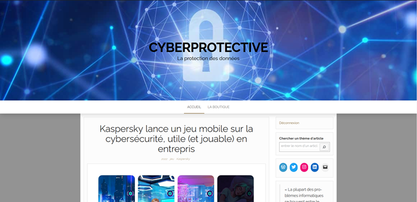

Projet 3
Il s'agit d'un projet effectué en atelier de professionalisation (BTS SIO) sur la découverte de WordPress et de ses plugins Woocommerce et Elementor.
Liste Compétences sollicitées :
- - Compétence 1 : Savoir s'adapter sur de nouveaux outils informatiques
- - Compétence 2 : Répondre à un certain nombre de demandes
- - Compétence 3 : Savoir effectuer un cahier de recette compréhensible pour tout le monde, permettant de guider la mise en place d'un projet ou pour son déploiement et son évaluation.
Voici une copie d'écran du site effectué avec WordPress
